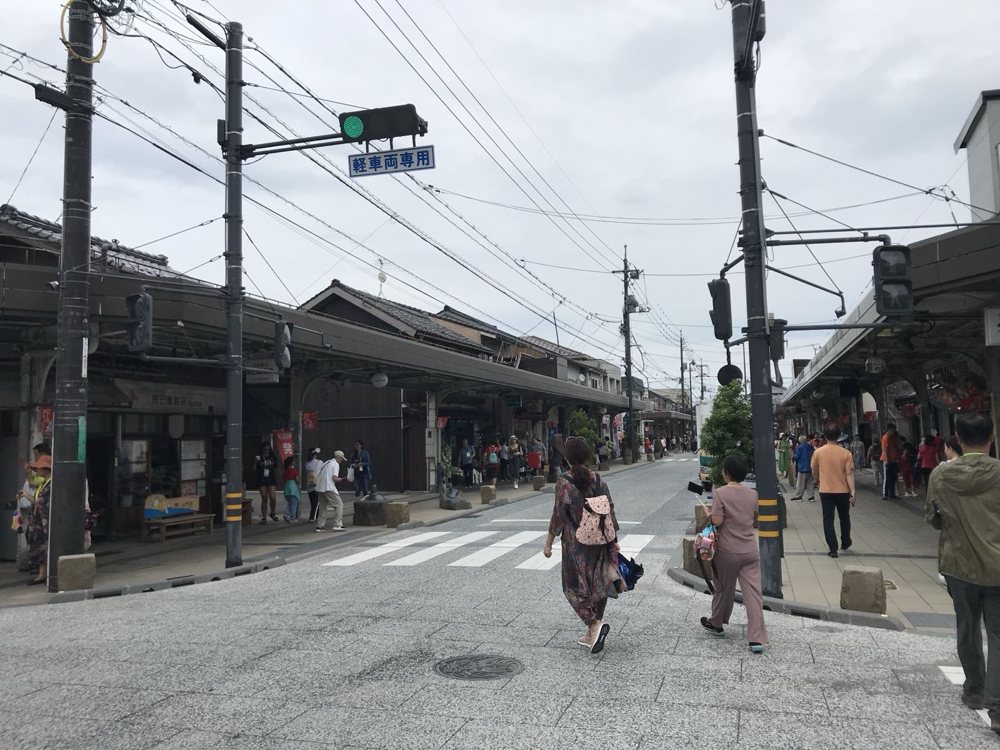

水木しげるロードガイド

境港は、漫画家・水木しげる氏の出身地です。JR境港駅前から続く水木しげるロードには、鬼太郎やねずみ男、目玉おやじなど178体の妖怪ブロンズ像が並び、年間200万人以上が訪れます。周辺には水木しげる記念館や食べ歩きの店、境港産の海産物を出す飲食店があります。ハレ・マカワオからは車で約50分（目安）です。

境港の基本情報
- 正式名称: 境港市（鳥取県西部）
- HALE MAKAWAOからの距離: 車で約50分（約35km）
- 駐車場: 水木しげるロード周辺に複数あり（無料・有料）
- 最寄り駅: JR境港駅（境線の終点。「鬼太郎列車」が走る）
- 観光エリアの広さ: 水木しげるロードの全長は約800m。徒歩で充分まわれる
推奨観光ルート（1日プラン）
9:00
HALE MAKAWAOを出発
車で境港へ。国道9号・431号経由で約50分。駐車場は「水木しげるロード第3駐車場」が広く、停めやすい。
9:45〜12:00
水木しげるロードを散策
全長約800mのロードを端から端まで歩く。鬼太郎・ねずみ男・目玉おやじなど178体のブロンズ像が並ぶ。沿道にはお土産店が多い。
10:30〜12:00
水木しげる記念館
入館料・最新の営業情報は公式サイトでご確認ください。妖怪をテーマにした展示施設。所要時間は約1〜1.5時間。
12:00〜13:30
港周辺で海産物ランチ
境港はベニズワイガニ・白イカ・境港サバが有名。「境港さかいこ食堂」など、港直送の海鮮丼を出す店が多い。
13:30〜15:00
境港漁港・魚市場エリア散策
新鮮な魚介類が並ぶ港エリアを散策。「みなとさかい交流館」では境港の歴史・産業を学べる（無料）。
15:30〜
HALE MAKAWAOへ帰宅
帰り道に皆生温泉（車で10〜20分）に立ち寄ることもできる。
主要スポット詳細
水木しげるロード
JR境港駅前から本町アーケードまで続く全長約800mの商店街。178体の妖怪ブロンズ像が点在しており、鬼太郎・ねずみ男・目玉おやじ・砂かけばばあ・子泣きじじいなど、水木しげる作品に登場するキャラクターを探しながら歩けます。
食べ歩き・お土産
ロード沿いには妖怪をモチーフにしたスイーツやグッズの店が並んでいます。鬼太郎まんじゅう・目玉おやじサイダー・妖怪せんべいなどの限定品があります。大型土産店「鬼太郎の店」では、文具・Tシャツ・フィギュアなどを扱っています。夜はライトアップされます。
水木しげる記念館
水木しげる氏の生涯と作品を紹介する常設展示館です。妖怪の模型・原画・自筆漫画を展示しており、終盤にある「妖怪洞窟」は子どもに人気です。館内にはグッズショップもあります。
開館: 9:30〜17:00（入館は16:30まで）。
境港の海産物グルメ
境港はベニズワイガニ水揚げ量日本一の漁港で、全国の約5〜6割を占めます。港周辺には海鮮丼・カニ料理・白イカの刺身を出す飲食店が多くあります。店舗には「なかうら」「かろいち」などがあります。カニのシーズン（10月〜5月）は特に混雑するため、早めの時間に訪れてください。
フェリーで隠岐島へ
境港は隠岐島へのフェリー発着地でもあります。隠岐汽船のフェリー（境港〜西ノ島〜海士〜隠岐の島町）が就航。片道2時間30分〜3時間30分（島により異なる）。隠岐の島は世界ジオパークに認定されており、断崖の海岸や独自の文化で知られています。ハレ・マカワオに連泊する場合は、隠岐島への一泊旅行を旅程に組み込むこともできます。
※フェリーの時刻・料金は隠岐汽船公式サイトで事前に確認を。
子連れで訪れる場合
- 水木しげるロードは比較的歩きやすく、ベビーカーでも回りやすいエリアです
- 水木しげる記念館の「妖怪洞窟」は小さい子が怖がることもあるため、事前に確認してください
- 港付近の海鮮ランチは順番待ちになることがあります。平日や開店直後（11:00〜11:30）は比較的入りやすい時間帯です
- お土産には「鬼太郎グッズ」や「境港産の鯖缶・イカの一夜干し」があります
境港の食材・お土産
- ベニズワイガニ: 10月〜5月が旬。ゆでガニ・カニ汁・カニ丼など
- 白イカ（ケンサキイカ）: 甘みが強く、刺身・一夜干しが人気
- 境港サバ: 境港のブランドサバ。しめ鯖・塩焼きなど
- 鬼太郎グッズ: 水木しげるロード沿いのショップで販売
アクセス情報
- HALE MAKAWAOから境港（水木しげるロード）まで: 車で約50分（約35km）
- 駐車場: 水木しげるロード周辺に有料駐車場多数（普通車500〜600円/日）
- 電車: 米子駅からJR境線で約45分（鬼太郎列車が走る）
- 米子駅から境港まで無料シャトルバス運行日あり（観光シーズン）
夜景スポット
夜は水木しげるロードがライトアップされます。港では漁船の明かりが海面に映る夜景も見られます。